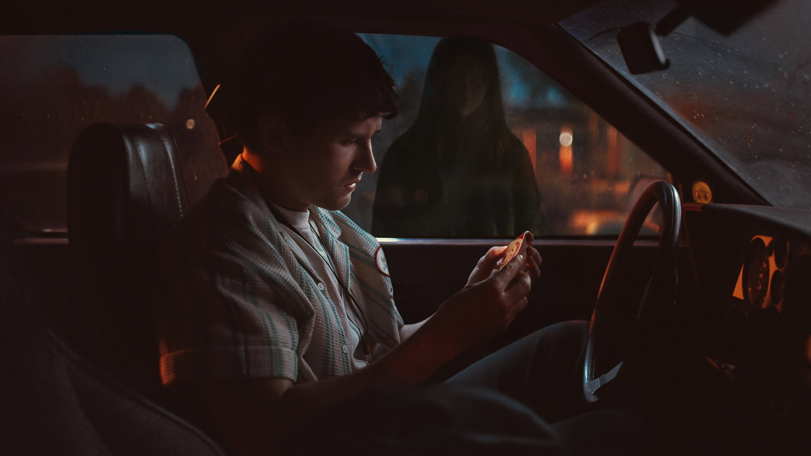
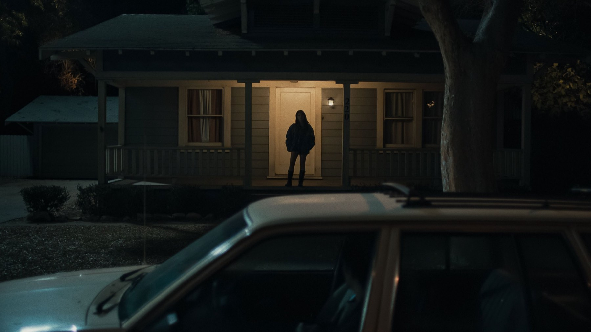
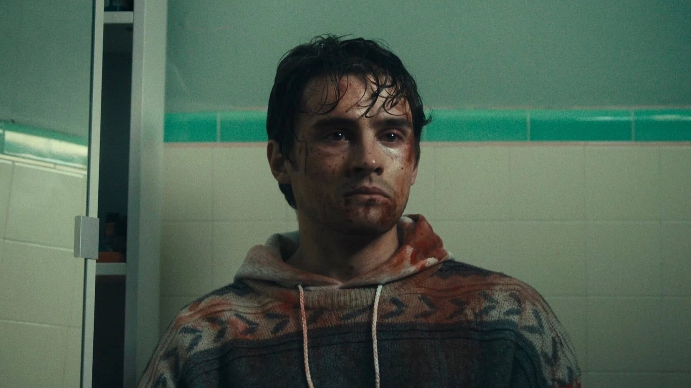

Obsession
Un desiderio esaudito, una ragazza che non ti lascia più andare: l'esordio dello youtuber Curry Barker è l'horror più disturbante (e divertente) della stagione
Attenti a cosa desiderate. È la regola più vecchia del racconto fantastico, eppure Curry Barker riesce a farla sembrare nuova, e soprattutto a renderla insopportabilmente scomoda. Obsession, arrivato nelle sale italiane il 14 maggio 2026 con Universal Pictures, è uno di quei rari horror che riescono a far ridere e gelare il sangue nella stessa inquadratura. E lo firma un ragazzo arrivato da YouTube, al suo primo lungometraggio con una vera distribuzione.
Lo diciamo subito: per noi è uno dei titoli horror più riusciti dell'anno, e la critica sembra pensarla allo stesso modo. Le recensioni positive superano il 90% su Rotten Tomatoes e anche in Italia i giudizi sono entusiasti. Non è un film perfetto, e più avanti vi diciamo perché, ma è un film che resta addosso.
Di cosa parla Obsession?
Bear (Michael Johnston) è un ragazzo gentile e impacciato che lavora in un negozio di strumenti musicali. Da anni è innamorato della collega e amica Nikki (Inde Navarrette), senza mai trovare il coraggio di dirglielo. Un giorno si ritrova tra le mani un piccolo oggetto magico, un bastoncino che esaudisce un solo desiderio a chi lo spezza. Bear lo spezza, e chiede che Nikki lo ami più di ogni altra cosa al mondo.
Il desiderio si avvera, alla lettera. Nikki diventa devota, poi morbosa, poi qualcosa di molto peggio, e Bear scopre che avere esattamente ciò che si è chiesto può trasformarsi in una prigione per entrambi. Fermiamoci qui: il bello del film sta tutto nel modo in cui questa premessa scivola, scena dopo scena, dal disagio al terrore.
Accanto ai due protagonisti ci sono Cooper Tomlinson e Megan Lawless, colleghi e amici di Bear, e Andy Richter nei panni di Carter, il titolare del negozio. Barker ha scritto da solo la sceneggiatura, con la consulenza del padre Jeff, e ha curato anche il montaggio.

Chi è Curry Barker, il regista arrivato da YouTube?
Prima di Obsession, Barker era conosciuto soprattutto online: con Cooper Tomlinson, che qui interpreta Ian, ha creato il duo comico That's a Bad Idea, e nel 2023 ha caricato su YouTube il cortometraggio horror The Chair, diventato rapidamente virale. È proprio quel corto ad aver aperto la strada al lungometraggio.
La produzione è stata minuscola: venti giorni di riprese nell'area di Los Angeles, più qualche giornata aggiuntiva, e un budget di circa 750.000 dollari. Il film è stato presentato in anteprima il 5 settembre 2025 nella sezione Midnight Madness del Toronto International Film Festival, dove si è classificato secondo nel premio del pubblico. Dopo la proiezione, Focus Features ne ha acquistato i diritti per circa 15 milioni di dollari, la cifra più alta mai pagata a Toronto per un film di genere. Poi sono arrivati i premi al festival di Sitges, tra cui un premio speciale della giuria.
Il debutto negli Stati Uniti, il 15 maggio 2026, ha confermato le attese: 17,2 milioni di dollari nel primo fine settimana, cioè più di venti volte il costo del film. Non male per un horror nato da un canale di sketch comici.
Perché funziona?
Il primo motivo ha un nome e un cognome: Inde Navarrette. Il suo è un ruolo durissimo, perché deve passare in un attimo dalla dolcezza alla minaccia, dal sorriso al grido, senza mai diventare una caricatura. Ci riesce in pieno. Roberto Giacomelli su Darkside Cinema la definisce magnetica e destabilizzante, e su DiscussingFilm Luca Mehta scrive che lo spettatore finisce per stare più dalla parte di Nikki che di Bear. È proprio questo lo scarto che rende il film più intelligente di quanto la premessa lasci pensare.
Il secondo motivo è il tono. Barker viene dalla comicità, e si sente: i tempi delle battute, l'imbarazzo che riempie le scene, i silenzi che durano un secondo di troppo. Ma quella stessa precisione la usa per spaventare. La violenza arriva all'improvviso, quando ci si è appena rilassati, e colpisce il doppio proprio perché la scena precedente ci aveva fatto sorridere. È un equilibrio difficilissimo, e per un esordiente è davvero notevole.
Il terzo motivo è il sottotesto. Obsession è, a conti fatti, una satira feroce sul cosiddetto bravo ragazzo che pensa di meritare l'amore di qualcuno. Il desiderio di Bear nasce da un sentimento sincero, ma toglie a Nikki la cosa più importante: la possibilità di scegliere. Il film non fa prediche, lascia che sia l'orrore a parlare, e il risultato è molto più efficace di qualsiasi spiegone.
Anche la fotografia di Taylor Clemons fa la sua parte, giocando molto con il buio: il volto di Nikki resta spesso a metà nell'ombra, e quella penombra basta a farci sentire che qualcosa non va anche quando lei sta semplicemente sorridendo.
La nostra sintesiUn desiderio d'amore che diventa una gabbia: Obsession fa ridere, mette a disagio e poi non ti lascia più.
Dove inciampa?
Qualche difetto c'è, ed è giusto dirlo. La parte centrale gira un po' a vuoto: una volta stabilita la dinamica tra Bear e Nikki, il film impiega qualche scena di troppo a farla evolvere, e la tensione si appiattisce prima di ripartire. È il rilievo più ricorrente anche nelle recensioni italiane più positive.
C'è poi una critica più sostanziale, che non condividiamo del tutto ma che ha un suo peso: una parte della critica americana ha fatto notare che il film racconta quasi tutto dal punto di vista di Bear e concede pochissimo spazio a quello di Nikki, con il rischio di scivolare nello stereotipo della fidanzata fuori di testa. Secondo noi la regia e l'interpretazione di Navarrette bastano a tenere il film lontano da quella trappola, ma è vero che un'apertura in più sul personaggio femminile lo avrebbe reso ancora più forte.
Infine, un avvertimento più che un difetto: Obsession è un film che mette a disagio di proposito. L'imbarazzo è lungo, la violenza è brutale, e chi cerca un horror di puro intrattenimento potrebbe uscirne provato. Ma è esattamente quello che Barker voleva.

Vale la pena vederlo?
Sì, decisamente, se reggete gli horror che non fanno sconti. Obsession è un esordio sorprendente per maturità, costruito su un'idea semplice e portato fino in fondo con coraggio. Andatelo a vedere in sala, possibilmente in compagnia: le risate nervose del pubblico fanno parte dell'esperienza.
Una nota per chi arriva dopo: nei mesi successivi Obsession è diventato un caso. Il 23 agosto 2026 ha superato i 500 milioni di dollari di incasso nel mondo. In Italia, a ottobre 2026, il film è disponibile a noleggio digitale su Apple TV, Amazon Video, Rakuten TV e CHILI.
Se da un lato la parte centrale perde un po' di ritmo e il punto di vista di Nikki resta in secondo piano, dall'altro Obsession è un horror crudele, divertente e pieno di idee, con una Inde Navarrette da applausi. Uno degli esordi più forti dell'anno.
Domande frequenti
Quando è uscito Obsession in Italia?
Il 14 maggio 2026 al cinema, distribuito da Universal Pictures. Negli Stati Uniti è uscito il 15 maggio 2026.
Dove vedere Obsession in streaming?
A ottobre 2026 in Italia è disponibile a noleggio digitale su Apple TV, Amazon Video, Rakuten TV e CHILI.
Chi è il regista di Obsession?
Curry Barker, autore arrivato da YouTube con il duo comico That's a Bad Idea e il corto horror The Chair. Obsession è costato circa 750.000 dollari con 20 giorni di riprese principali.
Fonti consultate (6)
- Wikipedia – Obsession (2025 film)
- Sky TG24 – Obsession, trama e cast del film di Curry Barker
- Darkside Cinema – Obsession, la recensione (Roberto Giacomelli)
- Hall of Series – Obsession, la recensione (Serena Faro)
- DiscussingFilm – Obsession review (Luca Mehta)
- NBC News – How an indie horror film became a box-office Obsession